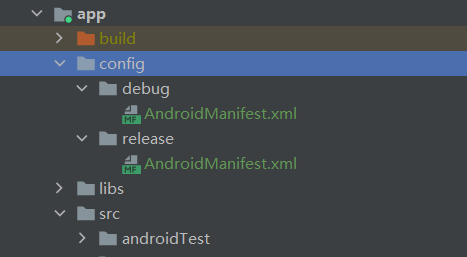
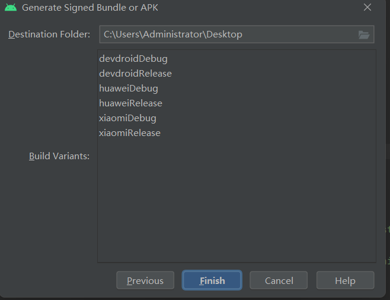
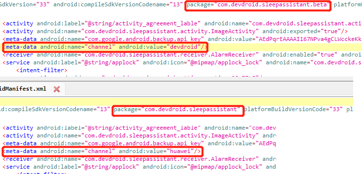

需求背景
开发人员经常会遇到手机上既要安装正式版本客户端，同时又要在手机上调试、开发新版本客户端功能。有些应用会区分调试版、内部开发版、灰度测试版、粉丝内存版、公测版、正式版等。这时候就会有同时在一部手机安装多个相同应用的需求。
由于Android系统采用应用包名（applicationId）区分应用，所以一旦手机上已经安装了正式版本，再安装测试版本时会直接覆盖安装，导致正式版本内已经产生的数据被清除。这个问题不只是影响开发人员，对于测试人员、项目领导仍然是个问题。
部分应用在推广时需要区分应用在不同渠道的推广用户数量和用户质量，此时应用分渠道打包能够有效解决相关难题。
今天我们就研究一下应用区分测试版、正式版并且能够在相同手机上共存的问题以及应用如何实现分渠道打包统计的问题。
首先看一下我们在同一个手机同时安装正式版、测试版且应用图标、应用名做区分的效果：
上图中，正式版本、测试版本是同一个项目的两种打包方式。直接调试运行和选择debug打包时，输出测试版本及对应的图标；现在release打包方式，输出正式版本及对应的图标。
下面我们梳理一下实现过程。
应用共存
创建config路径
我们首先在app路径下新建config文件夹，并在config中新建debug、release两个新的文件夹，分别存储两个打包方式的AndroidManifest.xml。

创建AndroidManifest.xml文件
在debug、release两个文件夹中创建AndroidManifest.xml文件，分别为debug、release两种打包模式指定不同的图标、应用名。debug模式下AndroidManifest.xml文件：
<?xml version="1.0" encoding="utf-8"?>
<manifest xmlns:android="http://schemas.android.com/apk/res/android">
<application
android:label="测试版本"
android:icon="@mipmap/icon_3_launcher"
android:roundIcon="@mipmap/icon_3_launcher_round">
</application>
</manifest>
release模式下AndroidManifest.xml文件：
<?xml version="1.0" encoding="utf-8"?>
<manifest xmlns:android="http://schemas.android.com/apk/res/android">
<application
android:label="正式版本"
android:icon="@mipmap/icon_2_launcher"
android:roundIcon="@mipmap/icon_2_launcher_round">
android:hardwareAccelerated="@bool/useHardwareAcceleration">
</application>
</manifest>
调整主AndroidManifest.xml文件
我们删除应用主AndroidManifest.xml文件中关于图标、应用名相关的配置。打开app/src/main/AndroidManifest.xml文件，调整为：
<?xml version="1.0" encoding="utf-8"?>
<manifest xmlns:android="http://schemas.android.com/apk/res/android"
xmlns:tools="http://schemas.android.com/tools"
package="com.devdroid.sleepassistant">
<application
android:allowBackup="true"
android:backupAgent=".database.DataBackupAgent"
android:name=".application.TheApplication"
android:requestLegacyExternalStorage="true"
android:theme="@style/AppTheme.NoActionBar">
<meta-data
android:name="android.max_aspect"
android:value="2.4" />
<!--省略非关联代码-->
</application>
</manifest>
Gradle使用config配置
在gradle中，使用config下的AndroidManifest.xml文件。我们打开app/build.gradle，在android项内，与buildTypes同级增加：
buildTypes {
// 省略非关联代码
}
sourceSets.debug {
manifest.srcFile './config/debug/AndroidManifest.xml'
}
sourceSets.release {
manifest.srcFile './config/release/AndroidManifest.xml'
}
此时我们运行项目，当项目采用debug方式编译时，则会使用config下debug中的配置，应用名为：测试版本，图标为：icon_3_launcher；当项目采用release方式编译时，则会使用config下release中的配置，应用名为：正式版本，图标为：icon_2_launcher。
Gradle配置应用包名
但是此时应用仍然仍然不能共存。我们知道Android系统使用应用包名区分应用，所以我们只需要使两种打包方式时应用包名不同即可。
我们仍然打开app/build.gradle，在android项内，在buildTypes中为debug项增加：applicationIdSuffix ".beta"。全部配置如下：
buildTypes {
release {
// 签名
signingConfig signingConfigs.release
// 定义APK名称格式
applicationVariants.all { variant ->
variant.outputs.all { output ->
def outputFile = output.outputFile
if (outputFile != null && outputFile.name.endsWith('.apk')) {
def fileName = "Sleepassistant_v${defaultConfig.versionName}_
${variant.productFlavors[0].name}_release_${dateTime()}.apk"
outputFileName = fileName
}
}
}
}
debug {
// 签名
signingConfig signingConfigs.release
applicationIdSuffix ".beta"
// 定义APK名称格式
applicationVariants.all { variant ->
variant.outputs.all { output ->
def outputFile = output.outputFile
if (outputFile != null && outputFile.name.endsWith('.apk')) {
def fileName = "Sleepassistant_v${defaultConfig.versionName}_
${variant.productFlavors[0].name}_beta_${dateTime()}.apk"
outputFileName = fileName
}
}
}
}
}
此时我们发现使用debug方式编译时，应用包名比使用release方式后面多了.beta。应用已经能够共存到同一个手机中了。
注意：此时由于两种打包方式，项目代码中对包名的配置并没有变更，所以debug方式打出的包使用旧包名时会出现异常。我们可以将使用包名处调整为不静态写死，改用：BuildConfig.APPLICATION_ID方式即可。
public final static String PACKAGE_NAME = BuildConfig.APPLICATION_ID;
分渠道打包
新增meta配置
我们打开app/src/main/AndroidManifest.xml文件，在其中新增一条meta-data：
<meta-data
android:name="channel"
android:value="${COM_DEVDROID_CHANNEL_VALUE}" />
Gradle配置channel
在gradle中，使用config下的AndroidManifest.xml文件。我们打开app/build.gradle，在android项内，与buildTypes同级增加：
flavorDimensions "default"
//渠道Flavors
productFlavors {
xiaomi {
manifestPlaceholders = [COM_DEVDROID_CHANNEL_VALUE: "xiaomi"]
}
huawei {
manifestPlaceholders = [COM_DEVDROID_CHANNEL_VALUE: "huawei"]
}
devdroid {
manifestPlaceholders = [COM_DEVDROID_CHANNEL_VALUE: "devdroid"]
}
}
按渠道编译项目
此时我们编译项目时，会看到有多个渠道可供选择，我们可以编译出不同渠道的安装包，选择在不同应用商店使用不同的渠道包。

打完包后，我们反编译相关包，会看到渠道名和包名如下：

代码获取渠道
应用中在统计数据时，获取应用的渠道，便于数据分析和统计。
/**
* 获取渠道的方法
*
* @param ctx 上下文Context
* @return 渠道名
*/
public static String getChannelName(Context ctx) {
String sChannel;
try {
ApplicationInfo appInfo = ctx.getPackageManager().getApplicationInfo(
ctx.getPackageName(), PackageManager.GET_META_DATA);
sChannel = appInfo.metaData.getString("channel");
} catch (Exception e) {
sChannel = "404";
}
return sChannel;
}
为了演示，我在应用启动时输出对应的渠道名。分别打包了官方渠道devdroid与华为应用商店渠道huawei，运行输出如下：
com.devdroid.sleepassistant D/MainActivity: channel:devdroid
com.devdroid.sleepassistant.beta D/MainActivity: channel:huawei
总结
我们可以采用应用共存的方式，实现测试版本与正式版本等不同版本安装在相同手机，便于研发、测试及运维人员的工作与使用，满足相关需求。
通过应用分渠道打包，实现应用分渠道分发，针对一些推广场景中对应用分发、统计和运维分析比较友好，能够有效解决相关需求。